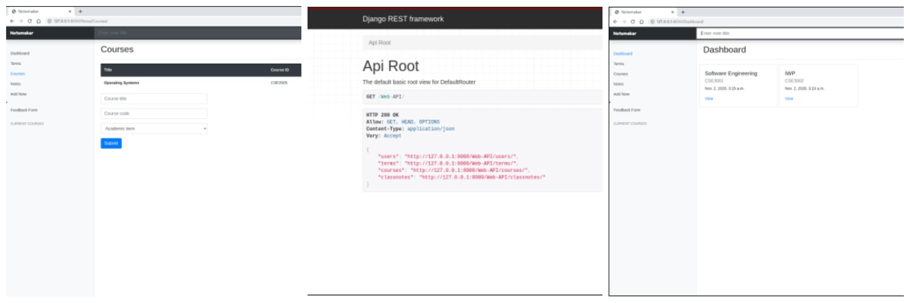

Notemaker - A note-taking application
Notemaker is a note-taking web application, using which students can efficiently take notes, access them, categorize them to proper courses, terms, years, and schools.
Why?
Throughout my undergraduate course, I was exposed to a panomaly of different note-taking applications, the one I found myself most frequently using was Google Docs. Google Docs though powerful in the capabilities of its rich text editor, doesn't offer an ease with which to organize saved notes into an intuitive structure. I wanted to add an extra layer to organization in so far as to giving the user the ability to organize not just their notes but also courses, academic terms, year, and school. Though people can just as easily attain a high degree of organization via nested directories on their desktop, I wanted something that was more dynamic, and hence I created Notemaker.
Features-
- Take notes using markdown editor, which enables users to type and arrange their notes very efficiently
- Access notes easily by entering the title in the search bar.
- Allow access and interact with the application's web-browsable API from the dashboard.